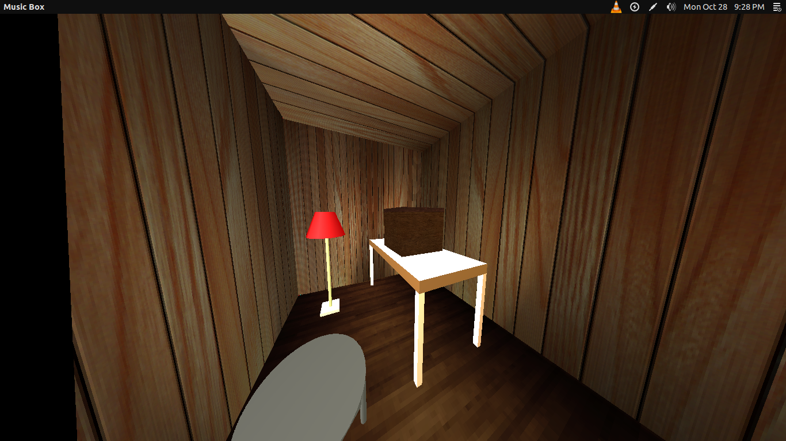

The Music Box, Part 2
About
This is the report for part 2 of the second assignment of our Computer Graphics course. The assignment is to create an animation of a music box, complete with a dancing figure that pops up when the box is opened. Code written by Anirudh Vemula and Rohan Prinja.
The report for the first part of this assignment can be found here. It contains details about the hierarchical model of the dancing wooden doll and some screenshots that were taken at the time of submission of the first part of the assignment.
Please note that the code submitted does not draw the Bezier path. However, it can do so if you uncomment the following block of code in the main.cpp file:
if (draw_bezier) {
draw_bezier_curve(curve_points, 0.001);
}
We had commented it out in the submission because it looked better, but you can always uncomment it to see the path of the camera being followed.
Screenshots
Some screenshots of our program:
Room from the outside
Press g to enter the room
The room with only the wall light turned on

The room with only the lamp light turned on
The room with both lights on
Moving the selector plane around
Clicking and selecting control points
In-animation screenshot
The end of the animation
Help
See the README in the source for help on how to compile, run and use the program. The README also explains the keyboard bindings to move the dancer and the box
Source Code
This program was coded in C++ using OpenGL. The source code is on github
Previous Assignments
The first assignment of our course can be found here